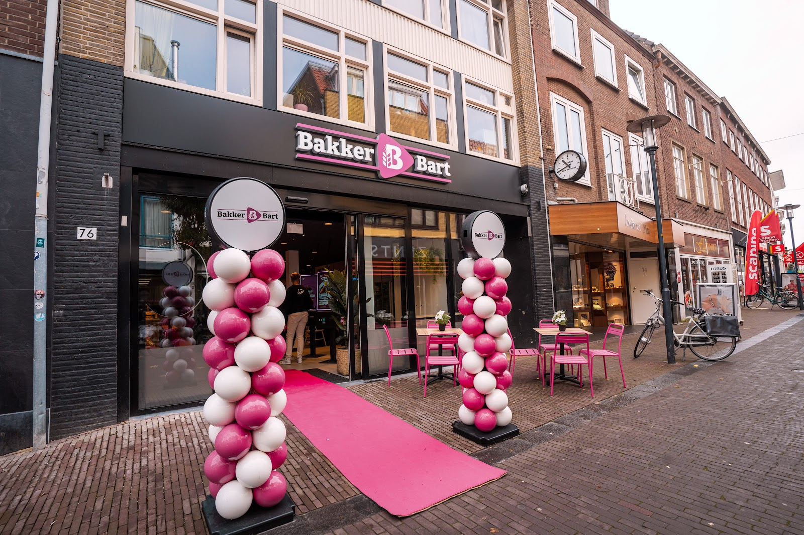
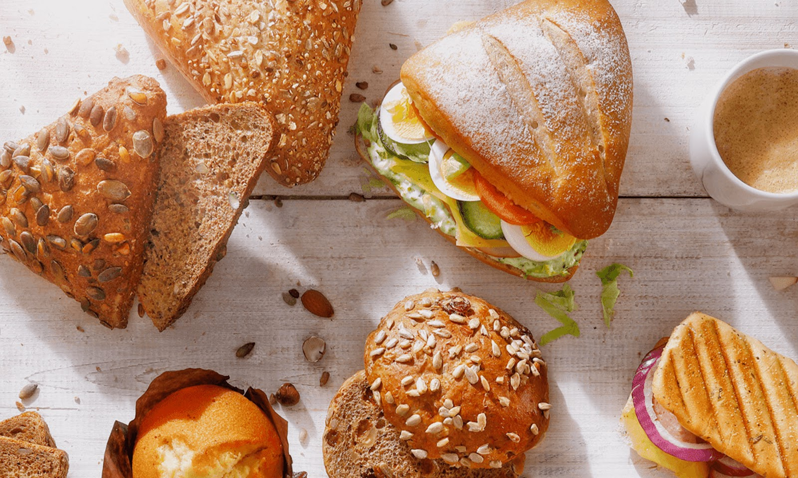
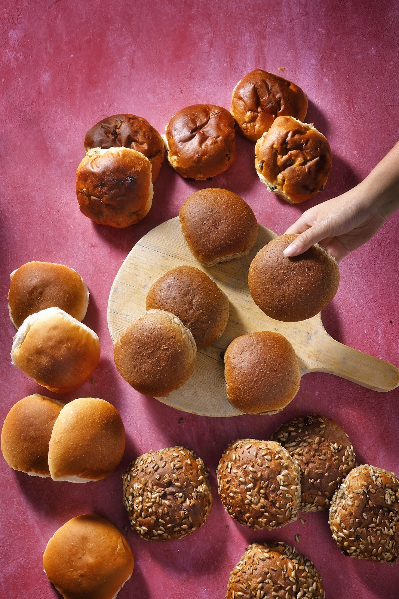
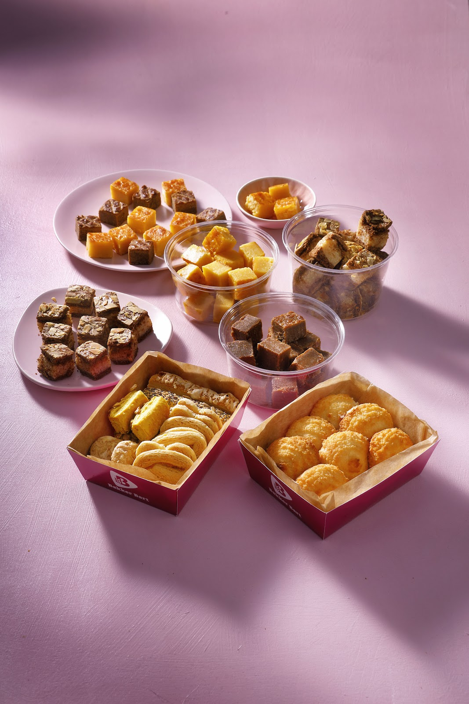
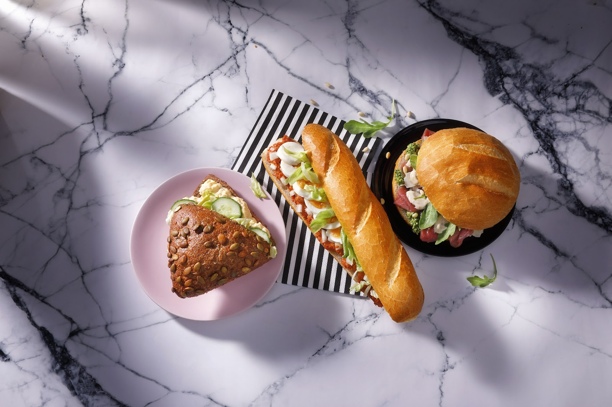
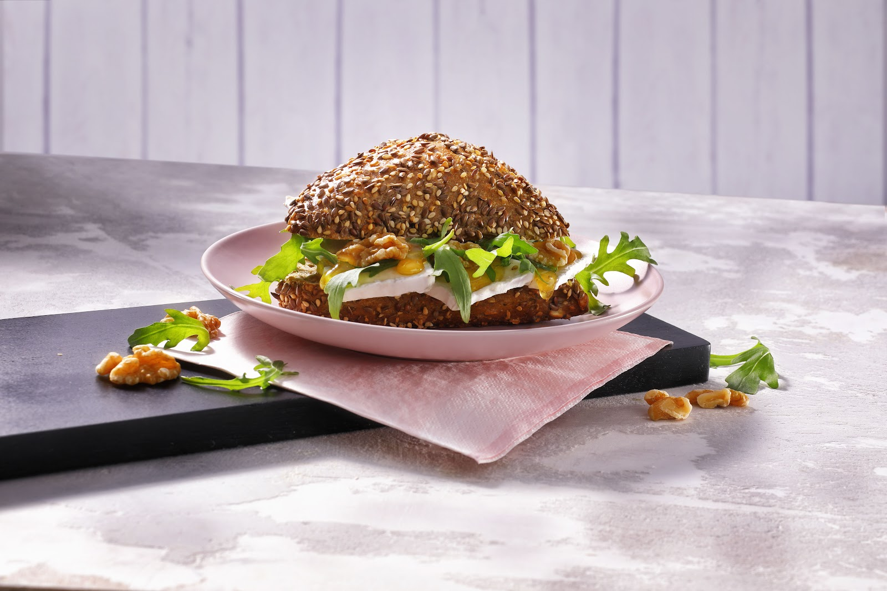
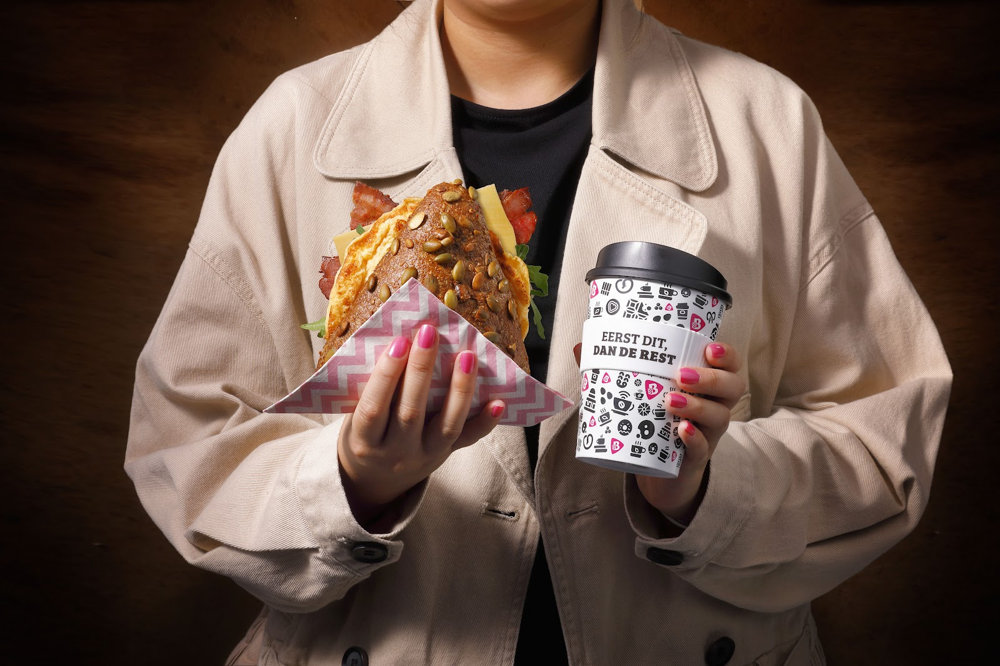

Broodjes, koffie en een plek om te zitten. Midden op de Hoogstraat.
Haal een belegd broodje voor onderweg, een zak bollen voor thuis of iets zoets bij de koffie. Of neem een tafel binnen of op het terras en eet het hier.
Ma 10:00 tot 17:00, di t/m vr 9:00 tot 17:00, za 8:00 tot 17:00. Zondag gesloten.

Wat je hier haalt
Vers belegd, warm uit de pers of gewoon een goed brood. Kijk in de vitrine wat er vandaag ligt.





Even zitten
Binnen zijn tafels, buiten staan de roze stoelen op de Hoogstraat. Kies van de kaart en eet het hier, met een koffie erbij.
★★★★★
„Wat een prachtige bakkerij! Mogelijkheid om lekker te zitten en sfeervol te eten. Mooie kaart, veel keuze. We kozen een paninni brie/bacon/ honing/walnoten en een zomer special "nieuwe vlam" pulled beef. Beide om je vingers bij af te likken. Heerlijk. Een aanrader. 🥰”
Eerst dit,
dan de rest.
Koffie en een broodje mee voor je aan je dag begint. Zaterdag al open vanaf 8:00.

Openingstijden
| Maandag | 10:00 tot 17:00 |
| Dinsdag | 9:00 tot 17:00 |
| Woensdag | 9:00 tot 17:00 |
| Donderdag | 9:00 tot 17:00 |
| Vrijdag | 9:00 tot 17:00 |
| Zaterdag | 8:00 tot 17:00 |
| Zondag | Gesloten |